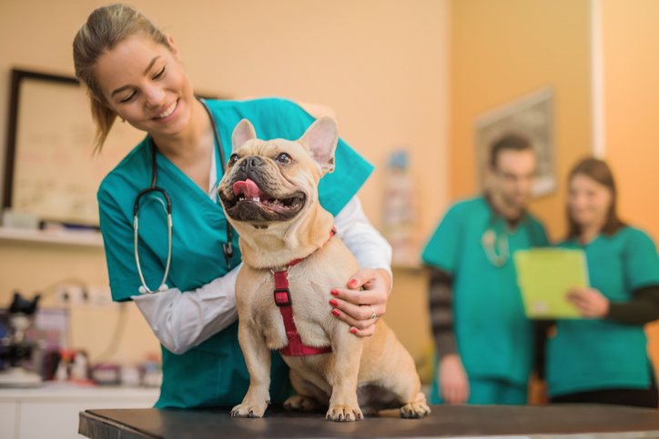

Sobre o Xuxucão
Localizada na Vila Anastácio, bairro da Lapa na cidade de São Paulo, o Pet Shop Xuxucão traz para o mercado o que há de melhor para seu pet. Fundada em 1994, o Petshop xuxucão foi premiado por 10 anos seguidos como melhor atendimento de São Paulo.
Nossa missão: Proporcionar segurança e qualidade ao seu pet
Oferecemos profissionais experientes para tirar dúvidas e o melhor tratamento ao seu pet. O atendimento possui um padrão de excelência e agildiade, garantindo qualidade e satisfação dos nossos clientes

Produtos
- Leva e traz: temos carros equipados com caixas de transporte e motoristas qualificados para carregar seu pet com segurança.
- Banho e Tosa: produtos de alta qualidade e tosadores treinados, temos produtos especiais para pets com problemas dermatológicos.
- Rações especiais: diferentes marcas de comida, sempre fresca e com melhor preço da região.
- Veterinário: Disponível 24h para qualquer emergência, aplicação de vacinas e cuidado especial com seu pet.